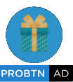

Описание параметров кнопки¶
Описание параметров используемых в кнопке (в соответствии с их применением). В случае, если параметр используется несколько отличным способом в разных режимах, этот будет помечено (включая искомые режимы).
Другие страницы:
Badge¶
Badge представляет собой объект, который включает в себя графический элемент (логотип, эмблема, и т.д.) Пример Badge в виде логотипа «probtnad» можно видеть на картинке:
BadgeImage¶
Содержит ссылку на графический элемент Badge.
BadgePosition¶
Устанавливает положение Badge на креативе. В зависимости от значений, Badge может располагаться:
top_left- в верхней левой частиtop_right- в верхней правой частиtop_center- в верхней части посерединеbottom_left- в нижней части слеваbottom_right- в нижней части справаbottom_center- в нижней части посередине.
BadgeSize¶
Устанавливает размер объекта Badge.
Задается как объект { W: 64.0, H: 64.0 } Где
W- ширина в пикселяхH- высота в пикселях.
BadgeActive¶
В зависимости от значения данного параметра Badge может быть включен или выключен.
true- включенfalse- выключен
По умолчанию установлен в true.
JsImpressionCode¶
Содержит пользовательский js-скрипт, который будет исполнен после запуска кнопки.
Пример использования:
'JsImpressionCode': '<script>alert("Hello World!");</script' + '>'.
VideoItemHeaderImage¶
URL изображения, которое будет использоваться для брендинга (лого на видео) для видео контента (ButtonContentType: video).
Если оно пустое, то строка таблицы и img не создаются.
По умолчанию: «»
BrandingImage¶
URL изображения, которое будет использоваться для брендинга страницы при перемещении кнопки.
(Изображение будет использоваться как background-image для #probtn_wrapper элемента).
По умолчанию: «»
CorrectPositionBeforeMove¶
Параметр, отвечающий за то корректировать ли положение кнопки до ее первого перемещения или нет.
Если установлен в true, то в случае изменения ориентации устройства или же изменения размера окна бразуера позиция кнопки будет обновления в соответствии со стартовой позицией ButtonPosition
По умолчанию: true
OnNoShowPixel¶
Пиксель вызываемый если кнопка НЕ показывается (в админке задается для всего аппа).
OnShowPixel¶
Пиксель вызываемый если кнопка показывается (в админке задается для всего аппа).
LocationPoints¶
Массив точек, для которых (в случае получения данных о геолокации) мы проверяем, находится ли пользователь в радиусе одной из них.
Массив состоит из обхектов формата {"rad": 500, "lat": 33.33, "lon": 55.55}
Где соответственно:
rad- радиус от точки, азадется в метрахlat- широтаlon- долгота
ButtonInjectPath¶
Путь по которому будет добавляться #probtn_wrapper блок кнопки, а также код модального окна.
По умолчанию:
body
waitIframeLoadedMsg¶
Ожидать сообщения от креатива о завершении загрузки и инициализации креатива, в частности probtn_creative_loaded_message сообщение.
Управление кнопкой посредстовм postMessage сообщений из iframe
По умолчанию: false
waitContentLoadedMsg¶
animationData¶
Дополнительные данные для анимации, в частности используется для добавления описания пути анимации кнопки (генерируется редактором http://probtn-animation-service.azurewebsites.net/ )
RoundButton¶
Формат: <режим>_<доп-параметр>_<цвет-заливки>
Варианты режима:
none- ничего не делать, по умолчаниюauto- автоматическое приведение формата кнопки до круга или элипса. Также возможно указать заливку свободного места, к примеруauto_fill_#121212manual- ручное указание «закругления» (указывается как второй параметр, к примеруmanual_30)
LockBody¶
Если включено, то мы применяем css стили для body для установки ширины и высоты равной 100%, а также скрытие полос прокрутки. Требуется для тех случаев, когда в модальном окне необходим ввод данных на ios во избежание смещения положения модального окна.
По умолчанию: false
CloseButtonShowDelay¶
Время в ms до показа области закрытия, в случаях если AlwaysShowCloseButton == true (то есть область закрытия показывается всегда).
По умолчанию: 0
SoundURL¶
URL до звукового файла, который будет воспроизведен на странице. Если поле пусто, то никакие действия производится не будут.
По умолчанию: «»
SoundMode¶
Режим воспроизведения аудио.
По умолчанию: «»
Варианты:
autoStart- автозапуск (за исключением ios, где данный режим работает аналогично режиму по умолчанию)- «» - запуск звука после взаимодействия пользователя со страницей
Также возможно указать дополнительный подпараметр после первого параметра, разделяя знаком подчеркивания _
Варианты:
* cycle - циклическое воспроизведение аудио до ее ручной остановки.
Пример:
autoStart_cycle
Заметка: Воспроизведение звука вручную останавливается если кнопка будет закрыта.
UseExternalDataAboutUser¶
Использовать или нет дополнительные данные по пользователям из внешних систем (в настоящее время Amber data)
По умолчанию: false
PassbackCustomCode¶
В данном параметре возможно указать код, который будет вызываться в случае, если кнопка будет выключена (когда от admin.probtn.com придет {"ButtonVisible":false,"ButtonEnabled":false})
Внимание - желательно предварительно тестировать желаемый код до использования.
По умолчанию «».
ModalWindowMode¶
Параметр, описывающий дополнительное поведение модального окна (показываемого при клике на кнопку).
Варианты:
- (пустое) - ничего не происходит отличного от поведения по умолчанию
- sidebarLeft
- sidebarRight
- sidebarTop
- sidebarBottom
По умолчанию «».
ExtrusionMode¶
Параметр, отвечающий за режим «выдавливания» страницы.
Варианты:
- (пустое) - ничего не происходит отличного от поведения по умолчанию
- topButton - body страницы будет сдвинуто вниз на высоту кнопки
По умолчанию «».
AdditionalTargetingParam¶
Дополнительный кастомный параметр для таргетинга, позволяющий гибко настроит таргетинг admin.probtn.com в зависимости от задач.
По умоланию «».
isAnimation¶
Варианты анимации кнопки.
Значения параметра:
- opacity
- rollout
- lookout
- forwardAndBack
- forwardStopAndAway
- anim1
- anim2
- upToDown
- topToBottomAndStop
- lookoutAndOut
Анимация opacity¶
Изменяет прозрачность кнопки с указанной в ButtonOpacity прозрачности кнопки до 0.55 по умолчанию.
Также возможно задать конечную прозрачность, указав в качестве параметра
opacity_<конечная прозрачность> к примеру opacity_0.4
Анимация rollout¶
Выдвижение кнопки по мере скролла страницы.
Возможно указать сторону из которой будет «выдвигаться» кнопка и максимальную ширину «выдвижения» (в процентах), в частности
rollout_<сторона>_<ширина> к примеру rollout, rollout_left, rollout_left_60
Анимация lookout¶
Постоянное выдвижение и скрытие кнопки около края страницы.
Возможно указать сторону из которой будет «выдвигаться» кнопка, в частности
lookout_<сторона> к примеру lookout, lookout_left, lookout_right
Анимация forwardAndBack¶
Кнопка перемещается от левого края до правого, затем обратно до левого.
Анимация forwardStopAndAway¶
Кнопка перемещается из-за левого края до середины, останавливается и затем перемещается за правый край.
Длительность каждого этапа задается параметром animationDuration
Анимация upToDown¶
Перемещение кнопки сверху к низу экрана (либо наоборот, указав дополнительный параметр направления анимации)
upToDown_<сторона_up_или_down>_<длительность_ожидания_перед_запуском_анимации_в_мс>
topToBottomAndStop¶
Перемещение кнопки сверху к низу экрана (либо наоборот, указав дополнительный параметр направления анимации).
В последствии topToBottomAndStop и upToDown будут объеденины для исключения дублирования.
animationDuration¶
Длительность анимации, задается в мс.
Debug¶
debug режим кнопки - отображает версию кнопки при открытом fancybox, дополнительный вывод в консоли.
По умолчанию false
WaitForGeoLocation¶
В случае использования геолокации ожидать ли получение координат (и в первый раз разрешения пользователя) до показа кнопки.
По умолчанию false
loadJqueryPepJS¶
Загружать ли jquery.pep, если скрипт не обнаружил соответствующую функцию библиотеки.
По умолчанию true
loadFancyboxJS¶
Загружать ли fancybox, если скрипт не обнаружил соответствующую функцию библиотеки
По умолчание true
ButtonIframeInitialSize¶
Размер кнопки. Задается как объект { W: 0, H: 0 }
Где W и H соответственно ширина и высота в px.
В случае, когда значения равны нулю, для iframe кнопки не применяется «масштабирование».
Если указаны размеры, то iframe от этих размеров будет подгонятся под размеры, указанные в ButtonSize параметре соответственно.
ClickOnCloseButton¶
Скрытие кнопки по клику на кнопку. По умолчанию false
AlwaysShowCloseButton¶
Всегда показывать область закрытия. По умолчанию false
FullscreenClickLink¶
(Для режима ButtonType=='fullscreen')
HideWithoutInteractionTime¶
По умолчанию 0 (не скрывать).
Время, спустя которое кнопка скрывается, если не было с ней взаимодействия
cssEaseDuration¶
Длительность анимации (в мс) для jquery.pep - по умолчанию 300.
ChangeScrollButtonAtFullSiteHeight¶
Меняется ли изображение кнопки в scroll режиме на основе высоты сайта (true), или размера window (false)
ControlInIframeFromParent¶
Управляется ли кнопка из родителя - по умолчанию false
isAddUtmSource¶
Добавлять ли к ContentURL параметр utm_source. По умолчанию false
UtmSourceUseOnlyDomain¶
По умолчанию false. Использовать ли по умолчанию в utm_source. В случае false - используется полный url, в случае true - использует только домен.
UtmCampaign¶
Значение параметра utm_campaign, если пустая строка, то не указывается. По умолчанию «»
UtmSource¶
Значение параметра utm_source, если пустая строка, то используется текущий url страницы (или домен, в зависимости от параметра UtmSourceUseOnlyDomain). По умолчанию «»
IframeScale¶
Параметр для применения к iframe для transform: scale(value) По умолчанию 1. В случае если указан iframeScaleMinWidth !=0 рассчитывается исходя из данного параметра.
ButtonInitDelay¶
Задержка перед показом кнопки (в мс), по умолчанию 0
VideoClickURL¶
Ссылка, по которой переходит пользователь по нажатию на видео. (В случае если VideoClickURL ==““ , то для этого подставляется строка из VideoPoster. Когда параметр пуст, ссылку на видео не добавляем)
ButtonOnClick¶
событие по нажатию на кнопку (добавляется в onclick, необходимо для запуска видео под мобильными браузерами) По умолчанию: function start1() { var video = $(«#video»).get(0); video.play(); }; start1(); setTimeout(start1 , 1500);
ButtonType¶
тип кнопки По умолчанию button - поведение кнопки по умолчанию.
Текущие варианты ButtonType:
button- кнопка с iframe в fancyboxmenu- floating menu режимsmartbanner- показ смартбаннераfullscreen- автозапуск содержимого после инициализации скриптаbutton_and_active_zones- кнопка с использованием активных зонbutton_and_scroll_zones- кнопка со сменой изображений с различными изображениями в разных зонах экрана (по высоте)fullscreen_fancybox- автозапуск содержимого в fancybox после инициализации скриптаfullscreen_and_button- одновременный показ кнопки и модального окнаexpansionVideo- расширяющаяся кнопка после нажатия (для mp4 плеера)expansionButton- расширяющаяся кнопка после нажатия
ButtonContentType¶
Тип содержимого кнопки
По умолчанию
- iframe - показ страницы в iframe
Текущие варианты ButtonContentType
- iframe - страница в iframe
- video - показ видео
- anchor - переход на указанный якорь на странице (варианты ContentURL - полная ссылка или якорь на странице, к примеру #someAnchor - переход к якорю или ссылке происходит в той же вкладке
VideoSize¶
Размер видео (необходим для корректного перерасчета размера видео, в связи с тем что некоторые мобильные браузеры по некоторой причине не сохраняют пропорции видео)
Сам параметр - объект, который состоит из X и Y параметров (ширина и высота соответственно).
Пример (оно же значение по умолчанию):
VideoSize: { X: 1920, Y: 1080 }
VideoPoster¶
Постер для видео Представляет собой url (до картинки).
TrackingLink¶
Ссылка на изображение, которое будет применено как background для wrapper’а кнопки. Введен в связи с необходимостью предоставить возможность указывать свое изображение-«пиксель» для сбора статистики о пользователе.
MinimizeWrapperTime¶
Время (в мс), спустя которое уменьшается размер wrapper’а кнопки. Применен в связи с проблемами некорректной анимации в ряде случаев на мобильных устройствах
OpenExternal¶
Параметр, отвечающий за то, как именно должна открываться ссылка (соответственно для ButtonType = button ) false - содержимое открывается в fancybox true - контент открывается в новой вкладке (применяется в случае, если сайт не может быть показан в iframe по тем или иным причинам)
CampaignID¶
Идентификатор кампании
NeverClose¶
При true убирает область закрытия для кнопки Применимо при ButtonType = button
domain¶
Домен, для которого запрашиваются настройки для кнопки. Если не указан, то домен будет получен автоматически и будет соответствовать тому, на котором в настоящий момент и запущена кнопка.
В случае, если указан параметр domain, то реальный домен страницы не будет использоваться и будут получены настройки для указанного в параметре domain домена.
fancyboxJsPath¶
Url до расположения fancybox js библиотеки.
fancyboxCssPath¶
Url до расположения fancybox css
jqueryPepPath¶
Url до расположения jquery.pep библиотеки
buttonAnimationTimeAfterFancybox¶
Длительность анимации кнопки после закрытия fancybox, в мс
HideAfterFirstShow¶
Возможность скрыть кнопку после первого показа пользователю
- true - после первого показа кнопка скрывается (до тех пор, пока HideAfterFirstShow не будет установлен в true, либо не истечет срок действия cookie)
- false - кнопка показывается каждый раз (естественно в зависимости от настроек сервера и таргетинга на стороне сервера)
Применимо при ButtonType = button
LoadFancyboxCSS¶
Загружать или нет css по-умолчанию для fancybox
- true - загружать
- false - не загружать (к примеру в случае если на сайте уже используется fancybox)
ContentURL¶
Url на контент, показываемый кнопкой. Для разных ButtonContentType
- iframe - любая ссылка на сайт или иной контент, показываемый в iframe
- video - ссылка на видео (формата, поддерживаемого HTML5 video)
ButtonEnabled¶
Включена / выключена
ButtonVisible¶
Видна / не видна
ButtonPosition¶
Позиция кнопки. Задается как объект {X:0.5, Y:.5}
Где X и Y указывается от 0 до 1 (от 0 до 1, где 1 - ширина или высота window соответственно)
Применимо при ButtonType = button
ButtonSize¶
Размер кнопки. Задается как объект { W: 64.0, H: 64.0 }
Где W и H соответственно ширина и высота в px
Применимо при ButtonType = button
ButtonDragSize¶
Размер кнопки во время перетаскивания. Задается как объект { W: 64.0, H: 64.0 }
Где W и H соответственно ширина и высота в px.
Применимо при uttonType = button
ButtonOpacity¶
Прозрачность кнопки. Задается от 0 до 1 (0 - полностью прозрачна, 1 - не прозрачна).
Применимо при ButtonType = button
ButtonImage¶
Ссылка на картинку кнопки.
Применимо при ButtonType = button
ButtonDragImage¶
Ссылка на картинку кнопки в момент ее перетаскивания.
Применимо при ButtonType = button
ClosePosition¶
Позиция области закрытия кнопки.
Задается как объект {X:0.5, Y:.5}
Где X и Y указывается от 0 до 1 (от 0 до 1, где 1 - ширина или высота window соответственно)
Применимо при ButtonType = button
CloseSize¶
Размер области закрытия. Задается как объект { W: 64.0, H: 64.0 }
Где W и H соответственно ширина и высота в px.
Применимо при ButtonType = button
CloseActiveSize¶
Размер области закрытия в активном состоянии (когда кнопка наведена на область закрытия).
Задается как объект { W: 64.0, H: 64.0 }
Где W и H соответственно ширина и высота в px.
Применимо при ButtonType = button
CloseActiveOpacity¶
Прозрачность области закрытия в активном состоянии (при наведении кнопки).
Применимо при ButtonType = button
HintLabelInsets¶
Отступы для текста (текст под кнопкой).
Задается в формате { T: 4.0, B: 4.0, L: 4.0, R: 4.0 }
Применимо при ButtonType = button
HintFont¶
Параметры шрифта для «подсказки» кнопки.
Задается как объект { Family: "Arial", Size: 18 }
- Family - шрифт для надписи. Указывается для font-family
- Size - размер текста
Применимо при ButtonType = button
HintFontColor¶
Цвет надписи. Задается как объект { R: 1.0, G: 1.0, B: 1.0, A: 1.0 }
Применимо при ButtonType = button
VendorText¶
Текст вендора (показывается внизу fancybox)
VendorSite¶
Ссылка на сайт вендора
VendorTextFont¶
Формат соответствует параметру HintFont
VendorTextColor¶
Цвет для VendorText. Формат соответствует HintFontColor
VendorColor¶
Цвет фона для VendorText
iframeScaleMinWidth¶
Минимальная ширина для сайта внутри iframe. Если текущая ширина fancybox меньше искомой iframeScaleMinWidth, то iframe при помощи transform масштабируется, чтобы поместится в текущую ширину Данный способ подходит для сайтов, которые сами не могут адаптироваться к таковой ширине. По умолчанию 0 - в этом случае масштабирования не производим.
iframeScale¶
По умолчанию 1. Параметр scale для transform iframe’а. Вычисляется автоматически на основе iframeScaleMinWidth и ширины fancybox
HintOpacity¶
Прозрачность надписи. (от 0 до 1). Применимо при ButtonType = button
HintImage¶
Фоновое изображение для подписи кнопки. Применимо при ButtonType = button
ContentSize¶
Размер для fancybox.
Представляет собой объект { W: 100, H: 100, X: "90%", Y: "90%" }
В случае, если параметр IsManualSize = true, то присутствуют X и Y, представляющие собой размер в процентах. В ином случае используются W и H (ширина и высота соответственно) в px.
IsManualSize¶
В случае, если параметр IsManualSize = true, тo в ContentSize присутствуют X и Y, представляющие собой размер в процентах.
В ином случае используются W и H (ширина и высота соответственно) в px.
ContentInsets¶
Отступы для fancybox (и всего что используется вместо него).
Представляет собой объект { T: -2.0, B: -2.0, L: -2.0, R: -2.0 }
с соответственно отступами для top, bottom, left и right.
Если ContentInsets меньше 0, то отступы рассчитываются автоматически на основе размеров кнопки.
HideInFrame¶
Параметр, отвечающий за то, показывать кнопкy на странице внутри iframe или нет.
- true - скрывать кнопку, когда страница показывается в iframe
- false - не скрывать кнопку, когда страница показывается в iframe
ZCustomCss¶
По умолчанию «».
В случае, если в данном параметре присутствует текст, он будет добавлен как css в страницу. Параметр нужен, если необходимо модифицировать css страницы без вмешательства в код.
showInParent¶
По умолчанию false.
Если кнопка находится в iframe и родительское окно как и старница в iframe размещены на одном и том же домене, то при true кнопка добавит в родителя код //cdn.probtn.com/includepb.min.js для запуска кнопки в родителе.
dfp¶
Объект для настроек при использовании DFP Google.
dfp: { isDFP: false, clickUrlEsc: "", cacheBuster: ""}
isDFP- используется ли DFPclickUrlEsc- ссылка из макроса DFP для отслеживания кликов
ClickCounterLink¶
Ссылка вызываемая при нажатии на кнопку. Необходима для случаев, когда требуется сторонний подсчет статистики (в частности кликов по кнопке) - для данной ссылки производится ajax запрос
isServerCommunicationEnabled¶
По умолчанию true.
Параметр отвечает за то, включено ли взаимодействие с сервером (в частности получение настроек и отправку статистики).
useLocalFileSettings¶
По умолчанию false.
Параметр отвечает за использование json файл с настройками кнопки.
isSmartBanner¶
По умолчанию false Если true, то вместо кнопки будет показываться смартбаннер (на основе https://github.com/jasny/jquery.smartbanner )
smartbannerJsPath¶
Путь по умолчанию до jquery.smartbanner.js
//cdn.probtn.com/libs/jquery.smartbanner.js
smartbannerCssPath¶
Путь по умолчанию до jquery.smartbanner.css
//cdn.probtn.com/libs/jquery.smartbanner.css
smartbanner¶
Объект с настройками для smartbanner’a
Настройки по умолчанию
- ::
- {
iosAppId: null, androidAppId: null, isFixed: false, //if true, smartbanner will have position: fixed style isFixedMode: „default“, //default - position fixed over content // extrusion - banner is fixed, but content moved down (banner height) - so banner don’t close any content at page
title: null, // What the title of the app should be in the banner (defaults to <title>) author: null, // What the author of the app should be in the banner (defaults to <meta name=»author»> or hostname) price: „FREE“, // Price of the app appStoreLanguage: „us“, // Language code for App Store inAppStore: „On the App Store“, // Text of price for iOS inGooglePlay: „In Google Play“, // Text of price for Android inAmazonAppStore: „In the Amazon Appstore“, inWindowsStore: „In the Windows Store“, // Text of price for Windows GooglePlayParams: null, // Aditional parameters for the market icon: null, // The URL of the icon (defaults to <meta name=»apple-touch-icon»>) iconGloss: null, // Force gloss effect for iOS even for precomposed url: null, // The URL for the button. Keep null if you want the button to link to the app store. button: „VIEW“, // Text for the install button scale: „auto“, // Scale based on viewport size (set to 1 to disable) speedIn: 300, // Show animation speed of the banner speedOut: 400, // Close animation speed of the banner daysHidden: 15, // Duration (in days) to hide the banner after being closed (0 = always show banner) daysReminder: 90, // Duration (in days) to hide the banner after «VIEW» is clicked separate from when the close button is clicked (0 = always show banner) force: null, // Choose „ios“, „android“ or „windows“. Don’t do a browser check, just always show this banner hideOnInstall: true, // Hide the banner after «VIEW» is clicked. layer: false, // Display as overlay layer or slide down the page iOSUniversalApp: true // If the iOS App is a universal app for both iPad and iPhone, display Smart Banner to iPad users, too. appendToSelector: „body“ //Append the banner to a specific selector
}
MainButtonClickable¶
Можно ли нажать на основную кнопку, по умолчанию true
Scroll параметры¶
Использование scroll-зон возможно в случае если ButtonType==»button_and_scroll_zones»
ButtonContentType¶
Тип содержимого для данной зоны
По умолчанию
- iframe - показ страницы в iframe
Текущие варианты ButtonContentType
- iframe - страница в iframe
- video - показ видео
- anchor - переход на указанный якорь на странице (варианты ContentURL - полная ссылка или якорь на странице, к примеру #someAnchor - переход к якорю или ссылке происходит в той же вкладке
- anchor_external - открытие страницы в новой вкладке
ZoneHeight¶
Высота зоны (полная высота страницы = 1)
ButtonImage¶
Url картинки кнопки
ButtonDragImage¶
Url картинки кнопки при перетаскивании
HintText¶
Текст для картинки
TrackingLink¶
Url для сбора статистики (при клике на кнопку)
CustomButtonParams¶
Использовать ли дополнительные параметры для кнопки (размеры, прозрачность, etc.) По умолчанию false
ButtonSize¶
Размер кнопки. Задается как объект { W: 64.0, H: 64.0 } Где W и H соответственно ширина и высота в px
ButtonDragSize¶
Размер кнопки во время перетаскивания. Задается как объект { W: 64.0, H: 64.0 } Где W и H соответственно ширина и высота в px
ButtonOpacity¶
Прозрачность кнопки. Задается от 0 до 1 (0 - полностью прозрачна, 1 - не прозрачна)
ButtonDragOpacity¶
Прозрачность при перетаскивании кнопки
ButtonIframeInitialSize¶
Размер кнопки. Задается как объект { W: 0, H: 0 }
Где W и H соответственно ширина и высота в px
В случае, когда значения равны нулю, для iframe кнопки не применяется «масштабирование». Если указаны размеры, то iframe от этих размеров будет погонятся под размеры, указанные в ButtonSize (или ButtonSize текущей зоны) параметре соответственно.
Пример
ScrollZones: [
{
ZoneHeight: 0.5,
ButtonImage: "//cdnjs.cloudflare.com/ajax/libs/probtn/1.0.0/images/probtn/gray.png",
ButtonDragImage: "",
HintText: "",
TrackingLink: "",
CustomButtonParams: false,
ButtonSize: { // Размер
W: 64.0,
H: 64.0
},
ButtonDragSize: { // Размер при перемещении
W: 68.0,
H: 68.0
},
ButtonOpacity: 0.8, // Прозрачность
ButtonDragOpacity: 1.0 // Прозрачность при перемещении
},
{
ZoneHeight: 0.5,
ButtonImage: "//cdnjs.cloudflare.com/ajax/libs/probtn/1.0.0/images/probtn/gray.png",
ButtonDragImage: "",
HintText: "",
TrackingLink: "",
CustomButtonParams: false,
ButtonSize: { // Размер
W: 64.0,
H: 64.0
},
ButtonDragSize: { // Размер при перемещении
W: 68.0,
H: 68.0
},
ButtonOpacity: 0.8, // Прозрачность
ButtonDragOpacity: 1.0 // Прозрачность при перемещении
}
]
ActiveZones параметры¶
Использование активных зон возможно в случае если ButtonType==»button_and_active_zones»
Name¶
Уникальное название зоны (A-Za-z0-9)
ButtonIframeInitialSize¶
Размер кнопки. Задается как объект { W: 0, H: 0 }
Где W и H соответственно ширина и высота в px
В случае, когда значения равны нулю, для iframe кнопки не применяется «масштабирование». Если указаны размеры, то iframe от этих размеров будет погонятся под размеры, указанные в ButtonSize параметре соответственно.
Position¶
Объект, описывающий местоположение зоны.
Пример:
Position: { X: 0.1, Y: 0.1 }
Позиция указывается как число от 0 до 1
ActiveImage¶
Ссылка на изображение для активной зоны (при наведении кнопки)
InactiveImage¶
Ссылка на изображение для неактивной зоны (по умолчанию, при отсутствии наведения на зону)
ActionURL¶
Ссылка, которая будет открыта при «сбрасывании» кнопки на зону. В случае, если ActionURL==»» (пустая строка), то откроется ссылка указанная в ContentURL (показываемая при нажатии на кнопку)
VisibleOnlyInteraction¶
true/false По умолчанию true * В случае true активная зона показывается только во время взаимодействия с кнопкой (ее перемещения) * В случае false активная зона видна всегда
ClickCounterLink¶
По умолчанию - false Ссылка вызываемая при сбрасывании кнопки на активную зону. Необходима для случаев, когда требуется сторонний подсчет статистики (в частности кликов по кнопке) - для данной ссылки производится ajax запрос
ActiveSize¶
Размер зоны в активном состоянии Представляет собой ActiveSize: { W: 64, H: 64 } Где W - ширина, H - высота
InactiveSize¶
Размер зоны в активном состоянии.
Представляет собой
InactiveSize: { W: 64, H: 64 }
Где W - ширина, H - высота
InactiveOpacity¶
Прозрачность зоны в неактивном состоянии
ActiveOpacity¶
Прозрачность зоны в активном состоянии
Пример
IsActiveZones: false,
ActiveZones: [
{
Name: "Area1",
Position: {
X: 0.1,
Y: 0.1
},
ActiveImage: "//probtnexample1.azurewebsites.net/img/logo.png",
InactiveImage: "//admin.probtn.com/eqwid_btn_nonpress.png",
ActiveSize: {
W: 64,
H: 64
},
InactiveSize: {
W: 64,
H: 64
},
ActionURL: "http://m0rg0t.ru",
ClickCounterLink: "",
VisibleOnlyInteraction: true,
},
{
Name: "Area2",
Position: {
X: 0.6,
Y: 0.1
},
ActiveImage: "//probtnexample1.azurewebsites.net/img/logo.png",
InactiveImage: "//admin.probtn.com/eqwid_btn_nonpress.png",
ActiveSize: {
W: 64,
H: 64
},
InactiveSize: {
W: 64,
H: 64
},
ActionURL: "",
ClickCounterLink: "",
VisibleOnlyInteraction: false,
InactiveOpacity: 0.8,
ActiveOpacity: 1
}
]
Неиспользуемые параметры¶
ContentWebViewInsets¶
Не используется
BaseInsets¶
не используется в текущей версии кнопки
ButtonOpenImage¶
Не используется
ButtonInactiveImage¶
Не используется
CloseActiveImage¶
Не используется. Ссылка на изображение для области закрытия в активном состоянии.
ButtonOpenSize¶
Не используется. Размер кнопки когда открыт fancybox. Задается как объект { W: 64.0, H: 64.0 } Где W и H соответственно ширина и высота в px
ButtonInactiveSize¶
Не используется. Размер кнопки в неактивном состоянии. Задается как объект { W: 64.0, H: 64.0 } Где W и H соответственно ширина и высота в px
HintInsets¶
Не используется
ButtonOpenOpacity¶
Не используется
ButtonInactiveOpacity¶
Не используется
HintImageInsets¶
Не используется
VendorOpacity¶
Не используется
ContentImageInsets¶
Не используется
ContentOpacity¶
Не используется
ContentBackOpacity¶
Не используется
ContentBackColor¶
Не используется
ContentActivityColor¶
Не используется
ContentImage¶
Не используется
ContentArrowSize¶
Не используется
ContentArrowOffset¶
Не используется
ContentArrowImageT¶
Не используется
ContentArrowImageB¶
Не используется
ContentArrowImageL¶
Не используется
ContentArrowImageR¶
Не используется
HintArrowSize¶
Не используется.
HintArrowOffset¶
Не используется.
HintArrowImageT¶
Не используется.
HintArrowImageB¶
Не используется.
HintArrowImageL¶
Не используется.
HintArrowImageR¶
Не используется.
Остальные параметры¶
DefaultDuration, DefaultDelay, OpenDuration, OpenDelay, CloseDuration, CloseDelay, ButtonShowDuration, ButtonShowDelay, ButtonHideDuration, ButtonHideDelay, ButtonDragDuration, ButtonDragDelay, ButtonUndragDuration: 0.2, ButtonUndragDelay, ButtonInactiveDuration, ButtonInactiveDelay, ButtonInertiaSpeed, ButtonInertiaSpeedMin, ButtonInertiaSpeedMax, ButtonInertiaFactor, CloseShowDuration, CloseShowDelay, CloseHideDuration, CloseHideDelay, CloseActiveDuration, CloseActiveDelay, CloseUnactiveDuration, CloseUnactiveDelay, HintLaunchDuration, HintLaunchDelay, HintShowDuration, HintShowDelay, HintHideDuration, HintHideDelay, ContentShowDuration, ContentShowDelay, ContentHideDuration, ContentHideDelay
Не используется